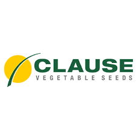
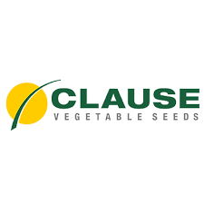

We are the Musaevshagro team, creating ideal conditions for growing seedlings. Our goal is a green future for Uzbekistan.
We care for every plant, apply modern technologies and support eco-friendly practices.

Musaev Shakhzod, born on October 12, 1978, is a businessman, investor, agronomist, and farmer. He graduated from the Plekhanov Russian University of Economics, combining academic knowledge with practical experience.
He began his agricultural career in 1995, focusing on innovative methods to make seedlings more resilient against the most dangerous plant diseases, including bacterial canker.
The major breakthrough came in 2010, when he became the first in Uzbekistan to introduce the seedling grafting technology for tomatoes, cucumbers, melons, and watermelons. Inspired by the expertise of Turkey and the Netherlands, he adapted the method to local conditions and perfected the process.
His tireless work, countless experiments, and participation in international exhibitions helped him develop a complete system — from irrigation schedules and timing to temperature control and post-grafting care. Today, we proudly state that Musaev Shakhzod pioneered this field in Uzbekistan, while Musaevshagro has earned people’s trust by offering seedlings of the highest quality.
Professional seedling cultivation for any need.

A wide range of plants available all year round.

Convenient delivery throughout Tashkent and Central Asia.
Address: Nazarbek Istiqlol 2, Tashkent, Uzbekistan

 



üìû +998 (98) 812-16-61 ‚Äî Islom
üìû +998 (98) 777-19-96 ‚Äî Ubaydullo


{kind=link}
{kind=link}
{kind=link}
{kind=link}